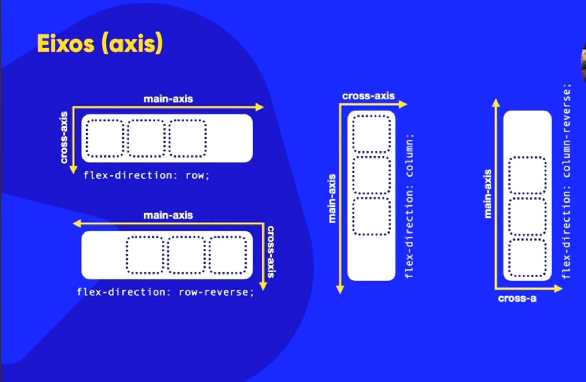

Vamos falar de Flexbox e Grid Layout, e vamos finalizar com um portfólio.
Essa box que se adapta sozinha foi só colocar display: flex ; no container e flex: auto ; no conteudo, que já fica assim automaticamente.
Nesse caso que não colocamos a direção ele vai ficar automatico como flex-diretion: row ; (em linha)
Alinhamento de eixos ( axis )
Tem o justify-content que vai configurar a parte do main-axes
SUAS PROPRIEDADES
flex-start: Alinha os itens ao início do contêiner.
flex-end: Alinha os itens ao final do contêiner.
center: Centraliza os itens no contêiner.
space-between: Distribui os itens com espaçamento igual entre eles, o primeiro item fica no início e o último no final do contêiner.
space-around: Distribui os itens com espaçamento igual ao redor de cada item, incluindo as extremidades.
space-evenly: Distribui os itens com espaçamento igual entre eles, sem considerar as extremidades.
E tem o align-itens que vai confiigurar a parte do cross-axes
flex-start: Alinha os itens ao início do contêiner (no início do eixo cruzado).
flex-end: Alinha os itens ao final do contêiner (no final do eixo cruzado).
center: Centraliza os itens no contêiner (no centro do eixo cruzado).
baseline: Alinha os itens em suas linhas de base.
stretch: Estica os itens para preencher o contêiner (os itens devem ser flexíveis para que isso funcione).
centralizei a div acima
A propriedade align-content define a distribuição do espaço entre e ao redor das linhas de um contêiner flexível quando há espaço extra no eixo transversal (geralmente vertical).
Aqui estão as possíveis propriedades:
flex-start: As linhas são empurradas para o início do contêiner.
flex-end: As linhas são empurradas para o final do contêiner.
center: As linhas são centralizadas no contêiner.
space-between: As linhas são distribuídas com espaços iguais entre elas.
space-around: As linhas são distribuídas com espaços iguais ao redor de cada linha.
stretch: As linhas são esticadas para ocupar o espaço disponível.
O valor padrão é stretch